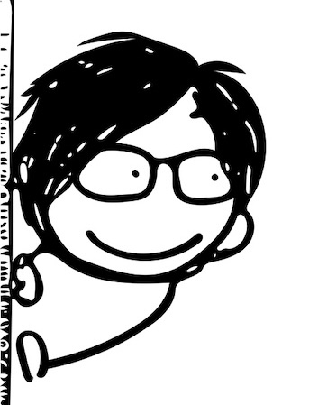
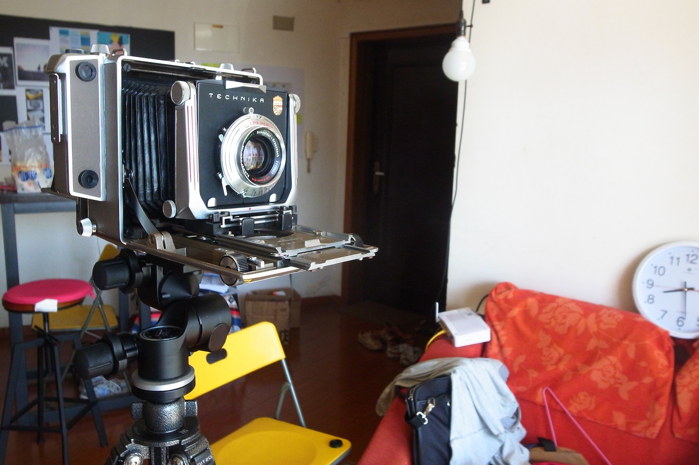
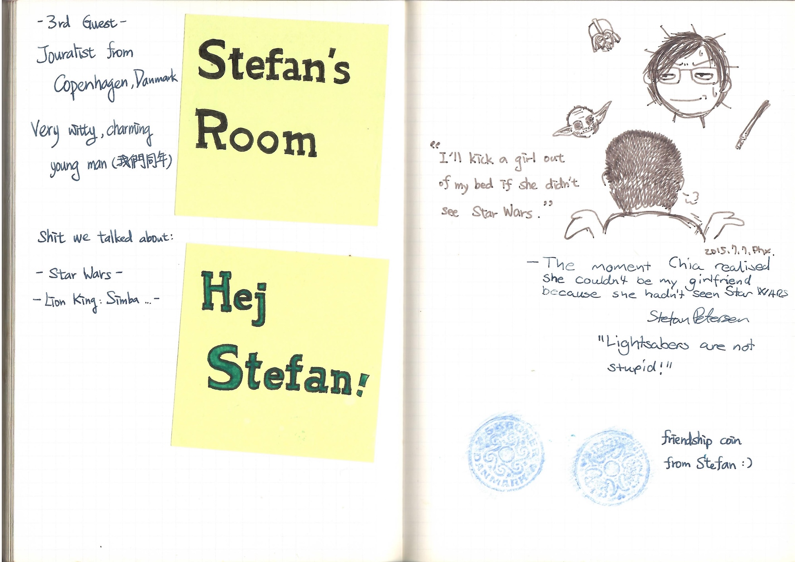

Airbnb
Hosting
I was a host on Airbnb in Shanghai, China. This is a small handbook of the things I did to make each guest's stay the best experience I could :)

Chia was so incredibly thoughtful and accommodating in making my stay as unique and comfortable as possible. The only terrible thing is — you will have to leave eventually :(
Reviews from guests
I was working in Shanghai and used the spare room in my apartment to run Airbnb hosting. What started as a side project slowly became a way to meet people Shanghai was bringing in from all over the world.
Before we meet
Before accepting requests, I spent a lot of time communicating with guests through Airbnb messages. Since they would be staying under the same roof with me for a while, I wanted to make sure they were at the right place — and could get what they wanted out of their trip.
I would ask about their plans to see whether my place could match their needs. If not, I would suggest other locations. Even when a guest didn't end up staying with me, people usually appreciated getting tips for their travel plan.

The Onboarding
After the request was confirmed, I sent the message of how to arrive. Guests could either take the metro or a taxi. I included the address in Chinese, and asked guests to screenshot it for the taxi driver. By either metro or taxi, I picked them up — at the metro station, or the drop-off spot of the taxi.
I always feel a big bless if I don't have to seek the door number by myself when I'm travelling, so I wanted every guest of mine to feel the same.
And to add some playfulness for the room...

Wi-fi is everything, so I prepared the instructions, together with some Shanghai travel pamphlets. A mug for drinking water, a glass for the bathroom — for tooth-brushing.


On arrival, I'd simply introduce the apartment:
“This is your room — there is the kitchen, the bathroom. Feel free to use the fridge, and just put everything you need in the bathroom. My room is there — only if you want to clean it for me, otherwise please do not enter ;)”
If a guest had time, I would walk them around the neighbourhood — how to get food, daily goods, and public transportation. Since most guests didn't read Chinese, I attached translations beside the air-conditioner remote and the washing machine.


Shanghai, curated
just for you
I made a point-of-interest map of Shanghai and hung it beside the door.

And I also love to drop off greeting notes unexpectedly for guests.


If our schedules fit, I enjoyed hanging out with guests, exchanging our thoughts on everything. I also collected magazines or newspapers in English related to Shanghai travel for guests — if I happened to see one — to help them have the best travel around Shanghai.


Farewell
I would write a short letter and leave it at the house if I left earlier than the guest. Or hide it somewhere if the guest left earlier than me. And I'd try to help with their departure — like booking a taxi to the airport.
If you were the guest who needed to catch up flight early in the morning — which always means chaos and starving — I would prepare some food and pack it with the letter, handing it to you right before you jump on the taxi ;)



Usually I would ask guests to sign their name in my notebook — they could also leave me a message if they liked.

For me, a trip is not about where you go — it's about who you meet :)